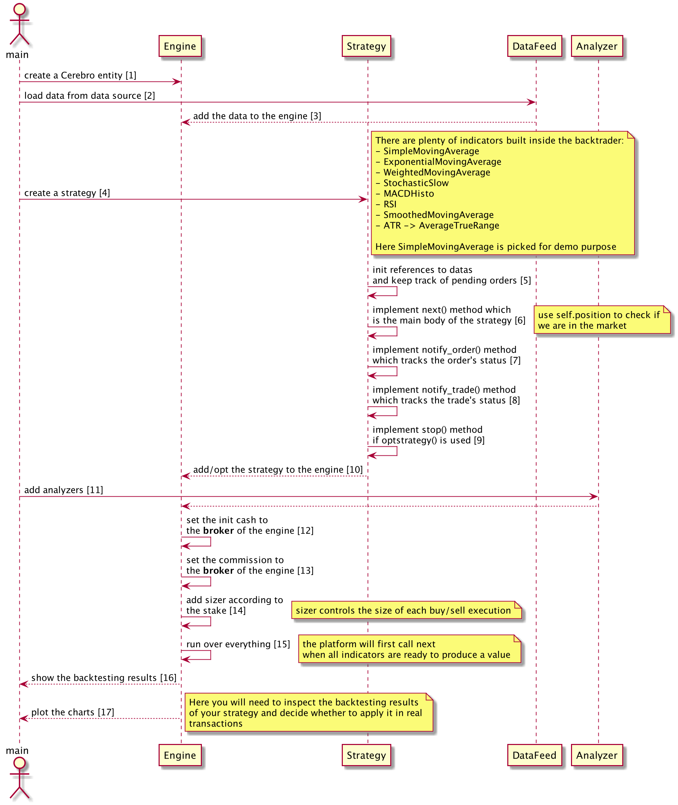

backtrader 基本架构
- Author: Damon Yuan
- Date: 2020-09-09
- 微信公众号: backtrader 基本架构
作为一个初学者，剖析一下本工具的基本架构，明白大家都很懒不想看代码，所以制作了一张流程图，希望对大家理解有所帮助。

直接上码，
Code:
from __future__ import (absolute_import, division, print_function,
unicode_literals)
import backtrader as bt
import backtrader.feeds as btfeeds
import pandas as pd
import matplotlib.pyplot as plt
import tushare as ts
ts.set_token('YOUR TOKEN')
pro = ts.pro_api('YOUR TOKEN')
class SmaStrategy(bt.Strategy): # [4]
params = (('maperiod', 20), ('printlog', True))
def __init__(self):
self.dataclose = self.datas[0].close # [5]
self.order = None
self.buyprice = None
self.buycomm = None
self.sma = bt.indicators.SimpleMovingAverage(self.datas[0], period=self.params.maperiod)
def notify_order(self, order): # [7]
if order.status in [order.Submitted, order.Accepted]:
# Buy/Sell order submitted/accepted to/by broker - 现在不重要
return
# 检查一个 order 有没有完成
# 注意： broker 可以 reject order 如果没有足够的 cash
if order.status in [order.Completed]:
if order.isbuy(): # 买
self.log(
'BUY EXECUTED, Price: %.2f, Cost: %.2f, Comm %.2f' %
(order.executed.price,
order.executed.value,
order.executed.comm))
self.buyprice = order.executed.price
self.buycomm = order.executed.comm
else: # 卖
self.log('SELL EXECUTED, Price: %.2f, Cost: %.2f, Comm %.2f' %
(order.executed.price,
order.executed.value,
order.executed.comm))
self.bar_executed = len(self)
elif order.status in [order.Canceled, order.Margin, order.Rejected]:
self.log('Order Canceled/Margin/Rejected')
# Write down: no pending order
self.order = None
def notify_trade(self, trade): # [8]
if not trade.isclosed:
return
self.log('OPERATION PROFIT, GROSS %.2f, NET %.2f' %
(trade.pnl, trade.pnlcomm))
def log(self, txt, dt=None, doprint=False):
if self.params.printlog or doprint:
dt = dt or self.datas[0].datetime.date(0)
print('%s, %s' % (dt.isoformat(), txt))
def next(self): # [6]
if self.order:
return
if not self.position:
if self.dataclose[0] > self.sma[0]:
self.log('buy - close %.2f' % self.dataclose[0])
self.order = self.buy()
else:
if self.dataclose[0] < self.sma[0]:
self.order = self.sell()
def stop(self): # [9]
self.log('(MA Period %2d) Ending Value %.2f' %
(self.params.maperiod, self.broker.getvalue()), doprint=True)
class TushareDataFeed:
def __init__(self, code, start, end):
self.code = code
self.start = start
self.end = end
def get_data(self):
df = ts.pro_bar(ts_code=self.code, adj='qfq', start_date=self.start, end_date=self.end)
df['date'] = df['trade_date']
df['volume'] = df['vol']
df.index = pd.to_datetime(df['date'])
df['openinterest'] = 0
df = df[['open', 'high', 'low', 'close', 'volume', 'openinterest']]
return btfeeds.PandasData(dataname=df.sort_index(), fromdate=pd.to_datetime(self.start), todate=pd.to_datetime(self.end))
if __name__ == '__main__':
cerebro = bt.Cerebro() # [1]
data = TushareDataFeed(code='600000.SH', start='20100331', end='20200331').get_data() # [2]
cerebro.adddata(data) # [3]
cerebro.addstrategy(SmaStrategy) # [10]
# strats = cerebro.optstrategy(KnnStrategy, maperiod=range(10, 11)) # [10]
cerebro.addanalyzer(bt.analyzers.SharpeRatio, _name='SharpeRatio') # [11]
cerebro.addanalyzer(bt.analyzers.DrawDown, _name='DW') # [11]
cerebro.broker.setcash(10000) # [12]
cerebro.broker.setcommission(commission=0.002) # [13]
cerebro.addsizer(bt.sizers.FixedSize, stake=500) # [14]
results = cerebro.run(maxcpus=1) # [15]
strat = results[0] # [16]
print('夏普比率:', strat.analyzers.SharpeRatio.get_analysis())
print('回撤指标:', strat.analyzers.DW.get_analysis())
plt.rcParams['font.sans-serif'] = ['SimHei']
plt.rcParams['axes.unicode_minus'] = False
plt.rcParams['figure.figsize'] = [9, 8]
plt.rcParams['figure.dpi'] = 125
plt.rcParams['figure.facecolor'] = 'w'
plt.rcParams['figure.edgecolor'] = 'k'
cerebro.plot(iplot=False) # [17]
代码一大堆，码上上图，
